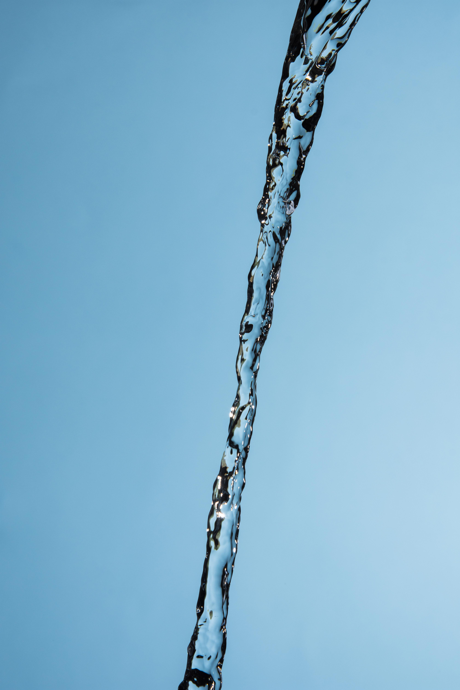

Tratamento da Água
Tratamento de Água: Conjunto de processos físicos e químicos destinados a transformar água bruta, ”in natura”, em água potável, adequando-a ao consumo humano e atendendo aos padrões legais de potabilidade.
ETAPAS DO TRATAMENTO DA ÁGUA
 A água bruta sai da bacia de captação e segue para a Estação de Tratamento, onde vai passar por vários processos até se tornar água potável e ser distribuída para a população.
Floculação: adição de produtos químicos coagulantes (ex: sulfato de alumínio) à água com o objetivo de desestabilizar as partículas em suspensão (impurezas), propiciando condições para a posterior aproximação das mesmas. Nesse processo ocorre a agregação das partículas desestabilizadas pela ação do produto químico e resulta na formação de flocos, com tamanho e peso adequados para sua remoção na fase seguinte do tratamento.
A água bruta sai da bacia de captação e segue para a Estação de Tratamento, onde vai passar por vários processos até se tornar água potável e ser distribuída para a população.
Floculação: adição de produtos químicos coagulantes (ex: sulfato de alumínio) à água com o objetivo de desestabilizar as partículas em suspensão (impurezas), propiciando condições para a posterior aproximação das mesmas. Nesse processo ocorre a agregação das partículas desestabilizadas pela ação do produto químico e resulta na formação de flocos, com tamanho e peso adequados para sua remoção na fase seguinte do tratamento.
Decantação: os flocos formados anteriormente sedimentam, por ação da força da gravidade, em tanques chamados decantadores. A água em tratamento, já clarificada, segue para a próxima etapa.
Filtração: consiste na remoção, através da passagem da água por filtros de areia, das partículas em suspensão que não ficaram retidas nos decantadores.
Desinfecção: eliminação dos microorganismos patogênicos presentes na água em tratamento, através da adição de um agente desinfetante, normalmente cloro e derivados.
Fluoretação: adição de flúor à água, como medida de saúde pública, com o objetivo de prevenir a ocorrência de cárie dentária.
As últimas etapas do tratamento de água são a desinfecção e a fluoretação. A partir do momento a água vai ser armazenada em um reservatório de água tratada e a seguir será distribuída para a população.
"O Tratamento de Água" é um longo processo de transformação pelo qual a água passa, até chegar em condições de uso para abastecer a população, independente da função que ela terá.
Assim, depois de captada nos rios barragens ou poços, a água é levada para a estação de tratamento, onde passa por várias etapas, que será mais complexo dependendo das impurezas existentes na água.
PROCESSO DE FILTRAÇÃO
.jpg) O tratamento de água é feito por químicos, biólogos, ou outros profissionais de áreas laboratoriais, que seguem várias etapas, a saber:
O tratamento de água é feito por químicos, biólogos, ou outros profissionais de áreas laboratoriais, que seguem várias etapas, a saber:
Oxidação: a primeira etapa do processo é misturar cloro na água para oxidar os metais presentes, principalmente o ferro e o manganês, que se apresentam dissolvidos na água.
Coagulação e Floculação: a água é misturada com o sulfato de alumínio, um coagulante que possui propriedades que ajudam a formar flocos gelatinosos, que vai servir para unir as impurezas e facilitar sua remoção. A floculação irá agitar a água, com a ajuda de pás giratórias.
Decantação: nessa etapa, a água passa lentamente pelos decantadores, permanecendo assim de 2 a 3 horas. Esse processo facilita que os flocos de impurezas se depositem no fundo do decantador.
Filtração: após passar pelos decantadores, a água vai para os filtros, onde são retiradas as impurezas que permanecem na água. Os filtros são formados por camadas de carvão ativado, que retira o odor e o sabor das substâncias químicas utilizadas. Por areia, que filtra as impurezas restantes e por cascalho que tem a função de sustentar a areia e o carvão.
Desinfecção: o cloro é usado para a destruição de micro-organismos presentes na água. A ozonização e a exposição à radiação ultravioleta também podem ser usados nesse processo.
Fluoretação: depois de ser filtrada, a água já está potável, nessa etapa é adicionado cloro e o flúor para a prevenção de cáries.
Correção do pH: nessa etapa, se necessário, é adicionado mais cal hidratado para a correção do pH.
Ortopolifosfato de Sódio: é acrescentado na última etapa, para proteger a tubulação contra a corrosão e a oxidação.
Por fim, a água está pronta para o consumo, permanecendo armazenada em reservatórios fechados e impermeabilizados, para então ser distribuída para a população.
O complemento de todo esse processo é um trabalho contínuo de conservação e vigilância, com a tomada de amostras em diversos pontos do sistema e análises físicas, químicas e biológicas, para garantir a qualidade sanitária da água a ser consumida.
